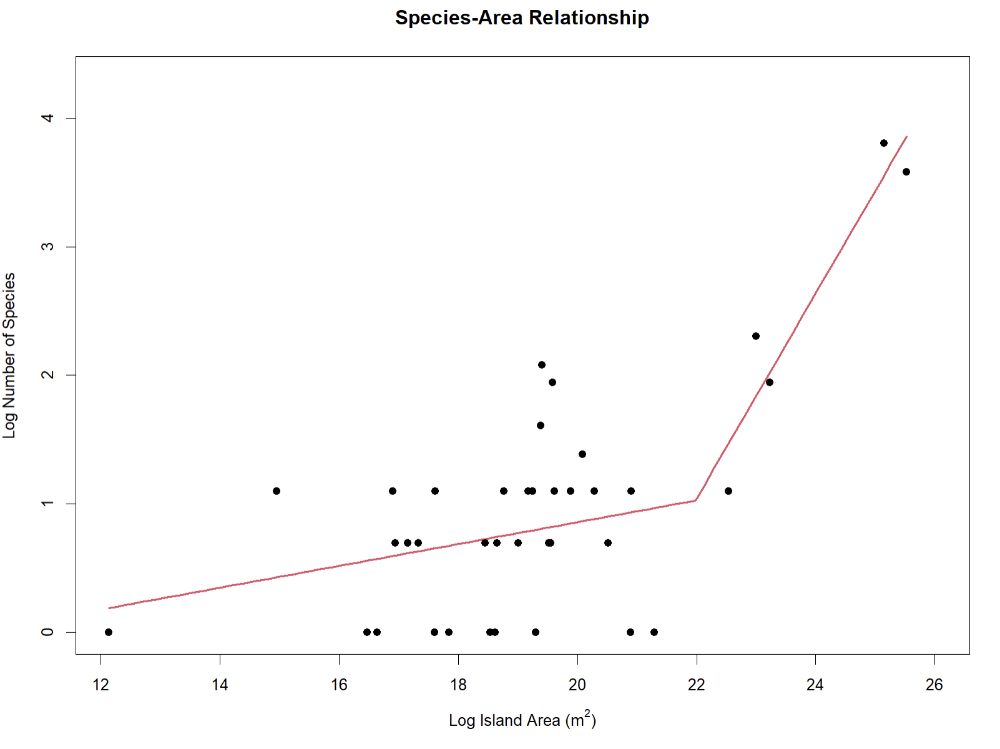

SSARP (Species-/Speciation-Area Relationship Projector) is an R package that provides a suite of functions to help users create speciation- and species-area relationships for island-dwelling taxa using occurrence data from GBIF (Global Biodiversity Information Facility) accessed via GBIF’s API or the user’s own occurrence data.
Species- and speciation-area relationships are useful for determining whether biodiversity is distributed in an unusual way in a given island system (e.g., species richness decreasing as islands get larger instead of increasing). An unusual trend in these relationships may be indicative of habitat loss or a negative impact of non-native species.
Please find the bioRxiv preprint of the manuscript associated with SSARP here!
Example: Creating a Species-Area Relationship
A species-area relationship (SAR) visualizes the relationship between species richness (the number of species) and the area of the land mass on which the species live. This brief example covers the SSARP workflow for creating a SAR, and more detailed explanations of the code and methods can be found in the Articles on the SSARP pkgdown website.
In order to construct a species-area relationship with SSARP, we will:
- Gather occurrence data from GBIF
- Filter out invalid occurrence records
- Find areas of pertinent land masses
- Create a species-area relationship
Step 1: Gather occurrence data from GBIF
In this step, we will find the unique identifying key associated with a taxon of interest (the lizard genus Anolis in this case) and use that key to access occurrence points for that taxon from GBIF. We will restrict the returned occurrence records to the Caribbean islands using the “geometry” parameter in the “getData” function.
library(SSARP)
# Get the GBIF key for the Anolis genus
key <- getKey(query = "Anolis", rank = "genus")
# Print the key
key
#> [1] 8782549The GBIF key for Anolis is 8782549. We will use this key, along with a Well-Known Text (WKT) polygon around Caribbean islands, to get data for Anolis from GBIF using the “getData” function from SSARP.
# Get data for Anolis from GBIF in a specified polygon around Caribbean islands
dat <- getData(key = key, limit = 10000,
geometry = 'POLYGON((-84.8 23.9, -84.7 16.4, -65.2 13.9, -63.1 11.0, -56.9 15.5, -60.5 21.9, -79.3 27.8, -79.8 24.8, -84.8 23.9))')
# Print the first 5 lines of dat
head(dat, n = 5)
#> # A tibble: 5 × 156
#> key scientificName decimalLatitude decimalLongitude issues datasetKey
#> <chr> <chr> <dbl> <dbl> <chr> <chr>
#> 1 5007064248 Anolis distichu… 19.0 -69.0 cdc,c… 50c9509d-…
#> 2 5007082681 Anolis evermann… 18.3 -66.3 cdc,c… 50c9509d-…
#> 3 5007565800 Anolis cristate… 18.4 -66.0 cdc,c… 50c9509d-…
#> 4 5008127474 Anolis sagrei D… 18.4 -64.5 cdc,c… 50c9509d-…
#> 5 5037019266 Anolis leachii … 17.1 -61.8 cdc,c… 50c9509d-…
#> # ℹ 150 more variables: publishingOrgKey <chr>, installationKey <chr>,
#> # hostingOrganizationKey <chr>, publishingCountry <chr>, protocol <chr>,
#> # lastCrawled <chr>, lastParsed <chr>, crawlId <int>, basisOfRecord <chr>,
#> # occurrenceStatus <chr>, taxonKey <int>, kingdomKey <int>, phylumKey <int>,
#> # classKey <int>, familyKey <int>, genusKey <int>, speciesKey <int>,
#> # acceptedTaxonKey <int>, acceptedScientificName <chr>, kingdom <chr>,
#> # phylum <chr>, family <chr>, genus <chr>, species <chr>, …The “dat” dataframe above includes the first 10,000 records from GBIF for Anolis within a specified polygon around the Caribbean islands.
Step 2: Filter out invalid occurrence records
Now that we have a dataframe that includes the first 10,000 records for Anolis within a specified polygon around the Caribbean islands, we will filter that data to include only occurrence records that are on land. Some occurrence records might have GPS points that are in the ocean instead of on an island, so it is important to exclude these invalid records.
# Find land mass names and exclude records not on land
land_dat <- findLand(occurrences = dat)
# Print first 5 lines of land_dat
head(land_dat, n = 5)
#> SpeciesName Genus Species Longitude
#> 1 Anolis distichus Cope, 1861 Anolis distichus -69.010239
#> 2 Anolis evermanni Stejneger, 1904 Anolis evermanni -66.314592
#> 3 Anolis cristatellus Duméril & Bibron, 1837 Anolis cristatellus -65.957558
#> 4 Anolis sagrei Duméril & Bibron, 1837 Anolis sagrei -64.512895
#> 5 Anolis leachii Duméril & Bibron, 1837 Anolis leachii -61.847698
#> Latitude First Second Third datasetKey
#> 1 19.015033 <NA> <NA> <NA> 50c9509d-22c7-4a22-a47d-8c48425ef4a7
#> 2 18.29657 Puerto Rico <NA> <NA> 50c9509d-22c7-4a22-a47d-8c48425ef4a7
#> 3 18.396785 Puerto Rico <NA> <NA> 50c9509d-22c7-4a22-a47d-8c48425ef4a7
#> 4 18.384578 <NA> <NA> <NA> 50c9509d-22c7-4a22-a47d-8c48425ef4a7
#> 5 17.118499 Antigua <NA> <NA> 50c9509d-22c7-4a22-a47d-8c48425ef4a7The “land_dat” dataframe above is a filtered version of the “dat” dataframe that we created by gathering data from GBIF. The “land_dat” dataframe includes occurrence records with GPS points that fall on a land mass, along with the locality information for that land mass.
The locality information is split across three columns: “First,” “Second,” and “Third.” The mapping utilities that SSARP uses sometimes output different levels of specificity for locality information (up to three different levels), so these columns provide space for these different levels. The island name that we are interested in will be in the last filled-in column of the three. For example, if there are two columns of locality information for a given occurrence record, the island name will be in the second. If there is only one column of locality information, it will contain the island name (as with Puerto Rico and Antigua above). If all columns have NA, the occurrence record is invalid and will be filtered out in the next step.
Step 3: Find areas of pertinent land masses
Next, we will use the dataframe of occurrence records with their associated land mass names (the “land_dat” object created above) with the “findAreas” function to find the area of each land mass.
# Use the land mass names to get their areas
area_dat <- findAreas(occs = land_dat)
# Print the first 5 lines of area_dat
head(area_dat, n = 5)
#> SpeciesName Genus Species Longitude
#> 2 Anolis evermanni Stejneger, 1904 Anolis evermanni -66.314592
#> 3 Anolis cristatellus Duméril & Bibron, 1837 Anolis cristatellus -65.957558
#> 5 Anolis leachii Duméril & Bibron, 1837 Anolis leachii -61.847698
#> 6 Anolis leachii Duméril & Bibron, 1837 Anolis leachii -61.845561
#> 7 Anolis grahami Gray, 1845 Anolis grahami -77.060327
#> Latitude First Second Third datasetKey
#> 2 18.29657 Puerto Rico <NA> <NA> 50c9509d-22c7-4a22-a47d-8c48425ef4a7
#> 3 18.396785 Puerto Rico <NA> <NA> 50c9509d-22c7-4a22-a47d-8c48425ef4a7
#> 5 17.118499 Antigua <NA> <NA> 50c9509d-22c7-4a22-a47d-8c48425ef4a7
#> 6 17.121707 Antigua <NA> <NA> 50c9509d-22c7-4a22-a47d-8c48425ef4a7
#> 7 18.39293 Jamaica <NA> <NA> 50c9509d-22c7-4a22-a47d-8c48425ef4a7
#> areas
#> 2 9710687500
#> 3 9710687500
#> 5 301187500
#> 6 301187500
#> 7 12225750000The “area_dat” dataframe includes records with GPS points that are associated with a land mass, along with the areas of those land masses (in m^2).
Step 4: Create the species-area relationship
Finally, we will generate the SAR using the “SARP” function. The “SARP” function creates multiple regression objects with breakpoints up to the user-specified “npsi” parameter. For example, if “npsi” is two, “SARP” will generate regression objects with zero (linear regression), one, and two breakpoints. The function will then return the regression object with the lowest AIC score. The “npsi” parameter will be set to one in this example. Note that if linear regression (zero breakpoints) is better-supported than segmented regression with one breakpoint, the linear regression will be returned instead.
SARP(occurrences = area_dat, npsi = 1)
#>
#> ***Regression Model with Segmented Relationship(s)***
#>
#> Call:
#> segmented.lm(obj = linear, seg.Z = ~x, npsi = 1, control = seg.control(display = FALSE))
#>
#> Estimated Break-Point(s):
#> Est. St.Err
#> psi1.x 22.021 0.712
#>
#> Coefficients of the linear terms:
#> Estimate Std. Error t value Pr(>|t|)
#> (Intercept) -0.96715 0.99558 -0.971 0.3382
#> x 0.09202 0.05340 1.723 0.0939 .
#> U1.x 0.70904 0.21351 3.321 NA
#> ---
#> Signif. codes: 0 '***' 0.001 '**' 0.01 '*' 0.05 '.' 0.1 ' ' 1
#>
#> Residual standard error: 0.5596 on 34 degrees of freedom
#> Multiple R-Squared: 0.6515, Adjusted R-squared: 0.6207
#>
#> Boot restarting based on 6 samples. Last fit:
#> Convergence attained in 2 iterations (rel. change 1.0388e-09)This is the species-area relationship (SAR) for Anolis including island-based occurrences within a polygon around Caribbean islands from the first 10,000 records for the genus in GBIF! The best-fit model was a segmented regression with one breakpoint. The R console will also output statistical information about the model.
Workflow Summary for using data from GBIF to create a species-area relationship plot
- Use
getKey(query, rank)to find the unique identifying key associated with your taxon of interest.
- Use
getData(key, limit, geometry)with the key found in Step 1 to access limit occurrence points from GBIF. There is a hard limit of 100,000 records for each call togetData(), as set by rgbif. The “geometry” parameter can be specified with a well-known text (WKT) representation of of geometry to restrict the geographic location of the returned occurrence records (see more about WKT below). - Use
findLand(occ, fillgaps)with the dataframe obtained in Step 2 to figure out the names of landmasses using the occurrence record GPS points and the maps R package. Setting the “fillgaps” parameter toTRUEwill enable the use of Photon API to fill in any missing landmass names left by the maps R package. - Use
findAreas(occ, area_custom)with the dataframe obtained in Step 3 to match the landmass names to a dataset that includes names of most islands on the planet and their areas. If the user would like to use a custom island area dataset instead of the built-in one, the “area_custom” parameter can be set to the name of the custom island area dataframe. 4a. If you’d like to only include occurrence records from islands, you can remove continental records by usingremoveContinents(occ)with the dataframe returned byfindAreas() - Use
SARP(occ, npsi)with the dataframe obtained in Step 4 to create a species-area relationship plot that reports information important to the associated regression. The “npsi” parameter indicates the maximum number of breakpoints the user would like to compare for model selection. The returned model and plot correspond with the best-fit model.
Workflow summary for using data from GBIF and a user-provided phylogenetic tree to create a speciation-area relationship plot
- Use
getKey(query, rank)to find the unique identifying key associated with your taxon of interest.
- Use
getData(key, limit, geometry)with the key found in Step 1 to access limit occurrence points from GBIF. There is a hard limit of 100,000 records for each call togetData(), as set by rgbif. The “geometry” parameter can be specified with a well-known text (WKT) representation of of geometry to restrict the geographic location of the returned occurrence records (see more about WKT below). - Use
findLand(occ, fillgaps)with the dataframe obtained in Step 2 to figure out the names of landmasses using the occurrence record GPS points and the maps R package. Setting the “fillgaps” parameter toTRUEwill enable the use of Photon API to fill in any missing landmass names left by the maps R package. - Use
findAreas(occ, area_custom)with the dataframe obtained in Step 3 to match the landmass names to a dataset that includes names of most islands on the planet and their areas. If the user would like to use a custom island area dataset instead of the built-in one, the “area_custom” parameter can be set to the name of the custom island area dataframe. 4a. If you’d like to only include occurrence records from islands, you can remove continental records by usingremoveContinents(occ)with the dataframe returned byfindAreas() - Use either
speciationDR(tree, label_type, occ)orspeciationMS(tree, label_type, occ)with your own phylogenetic tree that corresponds with the taxa signified in previous steps, a classifier that describes your tip labels (whether the tip labels are simply species epithets or full scientific names), and the dataframe obtained in Step 4 to add tip speciation rates using the DR statistic (Jetz et al. 2012) or the lambda calculation for crown groups from Magallόn and Sanderson (2001) respectively to the occurrence dataframe. The user may also choose to estimate tip speciation rates from a BAMM analysis (Rabosky 2014) by usingspeciationBAMM(label_type, occ, edata)with a classifier that describes your tip labels (whether the tip labels are simply species epithets or full scientific names), the occurrence record dataframe obtained in Step 4, and a bammdata object generated by reading the event data file from a BAMM analysis with the BAMMtools package (Rabosky et al. 2014). - Use
SpeARP(occ, npsi)with the dataframe obtained in Step 5 to create a speciation-area relationship plot that reports information important to the associated regression. The “npsi” parameter indicates the maximum number of breakpoints the user would like to compare for model selection. The returned model and plot correspond with the best-fit model.
Some helpful notes about well-known text (WKT) representation of geometry
When running getData(), the user can specify a well-known text (WKT) representation of geometry to restrict the geographic location of the returned occurrence records. The rgbif::occ_search function that getData() calls requires a counter-clockwise winding order for WKT. I find it helpful to think about WKT polygons in this way: imagine a square around your geographic area of interest and pick one of the corners as a starting point. The order of points in WKT format should follow counter-clockwise from the corner you picked first, and the final entry in the WKT string needs to be the same as the first entry. Additionally, while GPS points are typically represented in “latitude, longitude” format, WKT expects them in “longitude latitude” format with commas separating the points rather than individual longitude and latitude values. WKT polygons can have more specified points than included in this simple square example, and even include polygons nested within others or polygons with holes in the middle.
Literature Cited
- Jetz, W., Thomas, G.H, Joy, J.B., Harmann, K., & Mooers, A.O. (2012). The global diversity of birds in space and time. Nature, 491: 444-448.
- Magallόn, S. & Sanderson, M.J. (2001). Absolute Diversification Rates in Angiosperm Clades. Evolution, 55(9): 1762-1780.
- Rabosky, D.L. (2014). Automatic Detection of Key Innovations, Rate Shifts, and Diversity-Dependence on Phylogenetic Trees. PLOS ONE, 9(2): e89543.436
- Rabosky, D.L., Grundler, M., Anderson, C., Title, P., Shi, J.J., Brown, J.W., Huang, H., & Larson, J.G. (2014). BAMMtools: an R package for the analysis of evolutionary dynamics on phylogenetic trees. Methods in Ecology and Evolution, 5: 701-707.